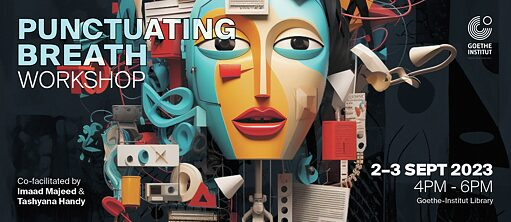

Discover the Japanese language fluency of our students
On 26 September 2023, the 33rd Japanese Language Speech Contest commemorating the 70th anniversary
of diplomatic relations between Japan & Sri Lanka will be held at the Auditorium of Sasakawa hall.
The contest was co-organised by Japanese Language Education Association (JLEA) and the Embassy
of Japan in Sri Lanka and supported by the Japan Foundation and JASTECA in order to encourage and
promote Japanese language education in Sri Lanka.
he Japanese Language Speech contest was started in 1989 and is organized by the JLEA. Japanese Language
Education Association (JLEA) is the unit within JASTECA which serves as the pioneer organization
in Sri Lanka disseminating the Japanese Language to Sri Lankans. JLEA has been carrying out this
service since 1974.
This year, 4 participants in the Category A, 3 participants in Category B enjoyed speaking
about Japan and the things that interest them.The participants were judged based on the content,
expression and grammar of their speeches and a Question & Answer session with the judges.

WORKSHOP PUNCTUATING BREATH
A workshop on being creative for our German language learning students
The act of breathing is an act of keeping time, each heartbeat is the striking of a metronome,
and as we form words with our vocal chords, we punctuate silence with meaning. In this workshop,
we will center the role of breath in poetic practice, particularly spoken word.
Through meditative breathing and writing exercises, we will bring forth what’s been bubbling within.
Sitting with these bubblings, letting them settle and fill into the form and vessel of the page,
we will explore how we can find our individual and distinct voices as performers, to translate
what is on the page onto the stage.
This workshop is open to participants of age 18 - 35, writing and performing in English.
We also encourage participants who have yet to perform their poetry to an audience.
This workshop takes place on September 2 and 3, 2023 at the Goethe Institut Library.
IMPORTANCE OF CHINESE LANGUAGE
A workshop on Chinese Language as a soft skill for the future of Sri Lanka
COLOMBO : The contrasting traits of an individual is what construes the individual’s character
and personality. A vastly recognized and encouraged trait, in the cooperate and general lifestyle
of man, is the possession of a “soft skill”.
Speaking to Colombo Times, Shaikib Hisham, a law student, said : “Soft skills” can be identified
as the traits and inter personal skills that characterize a person’s relationship with others.
Sociologists may use the term soft skills to describe a person’s emotional quotient (EQ) as opposed
to the intelligent quotient (IQ). Soft skills are built on the foundation of mutuality.
It has more to do with who people are, rather than what they know. Amidst the prevalence of
an established number of contrasting soft skills, there prevails one that takes the spotlight
dominantly – The soft skill of “communication”. The ability to inter-relate with an individual
is the foundation of any human relationship. It is a vast preponderance in the cornerstone of
humanity.